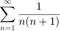

Arithmetic series example
This is an example to implement an arithmetic series in Matlab code.
Contents
Sequence and series definition
A Sequence is a list of things (usually numbers) that are in order. A sequence is usually defined by a Rule, this is a way or equation to find each term [1]. Thus, in order to be able of determine (, th term) the Rule is written as a formula, where is any term.
Now lets find a way to determine automatically each term () for the next sequence: 3, 5, 7, 9, ... and so forth,
for n=1:5 u=2*n+1 end
u =
3
u =
5
u =
7
u =
9
u =
11
Finite series
Now let be a sequence. Then the finite sum (partial sum) of order is:
,
and can be implemented in matlab as shown below.
for n=1:5 Un(n)=2*n+1; end Sum=sum(Un)
Sum =
35
Another way to calculate is with the following code:
Sum=0; for n=1:5 Un=2*n+1; Sum=Un+Sum end
Sum =
3
Sum =
8
Sum =
15
Sum =
24
Sum =
35
Infinite series
Let be a sequence. Then the Infinite sum order is:
Lets try to implement in Matlab the next infinite series:

The matlab code should be in this way(check the code serieCode):
Sum=0; finalValue=10; for n=1:finalValue Un=(1)./(n*(n+1)); Sum=Un+Sum; end fprintf('The sum is=%d\n', Sum)
The sum is=9.090909e-01
Now lets try to guess what number the sum could be as the limitValue var tends to infinity (plottedSeriesCode).
Sum=0; finalValue=10; for n=1:finalValue Un=(1)./(n*(n+1)); Sum(n+1)=Un+Sum(n); end fprintf('The sum is= %d\n', Sum); plot(Sum)
The sum is= 0 The sum is= 5.000000e-01 The sum is= 6.666667e-01 The sum is= 7.500000e-01 The sum is= 8.000000e-01 The sum is= 8.333333e-01 The sum is= 8.571429e-01 The sum is= 8.750000e-01 The sum is= 8.888889e-01 The sum is= 9.000000e-01 The sum is= 9.090909e-01
References
- [1] Math is Fun www.mathisfun.com
- sagitario.itmorelia.edu.mx/gmarx/summerJade
About the course
This introduction to Matlab was devloped during the summer school at Jade University by Gerardo Chavez-Campos and Mehmet Yuksekkaya.